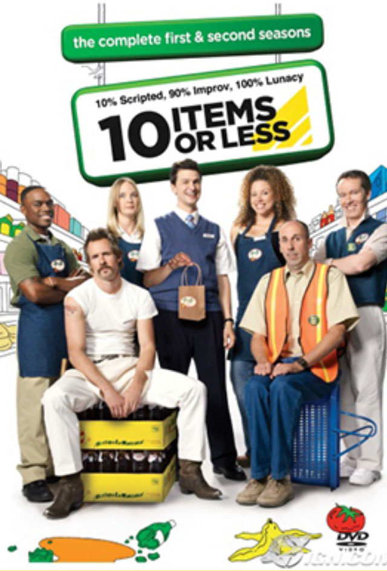

Television and Film work
John got to play a Geico caveman, a prisoner, a grocery store manager and even a cowboy on the boob tube! More importantly, he hosted a show with Heidi Klume

comedic performer, writer and producer working in
television, film and theater.
One of the original Geico cavemen, Lehr also
starred in "10 Items or Less", on TBS and on Hulu's
original comedy western "Quickdraw." Lehr
co-created, wrote and executive produced both series.
Watch Now
John got to play a Geico caveman, a prisoner, a grocery store manager and even a cowboy on the boob tube! More importantly, he hosted a show with Heidi Klume
John’s story-based comedy has appeared in LA, NYC Off-Broadway,
Montreal Comedy Festival and clubs across the country.
John is also a seasoned Host, Master of Ceremony and Toastmaster.
More info & Video
John Lehr speaks openly & hilariously about his struggle
with drugs and alcohol, his twenty plus years of sobriety and
his career in entertainment.
John Lehr has headlined Caron Treatment Center’s Sober St. Paddy’s Day Comedy Night for two years in a row and brought the house down both times. Hundreds have enjoyed Lehr’s imaginative mix of humor that alternates between bawdy and brainy, inspired and slapstick. Lehr weaves together over-the-top stories of his seemingly endless “rock bottoms” that literally leave you laughing so hard you miss half of the story. He combines physical humor with dramatic pauses and the kind of narrative story-telling hilarity that comics today should do more of – John Lehr’s show is ridiculous and true and resonates with those who are sober, those who aren’t, and those who should be.
Regional Vice President, Caron Treatment Centers
With 20 years experience pitching, writing, showrunning, producing and acting John is available to help you develop and pitch your projects. Whether you are are new to the biz or looking for some new insights, have your people call John’s people… or just click below (probably more efficient).
More info & Video